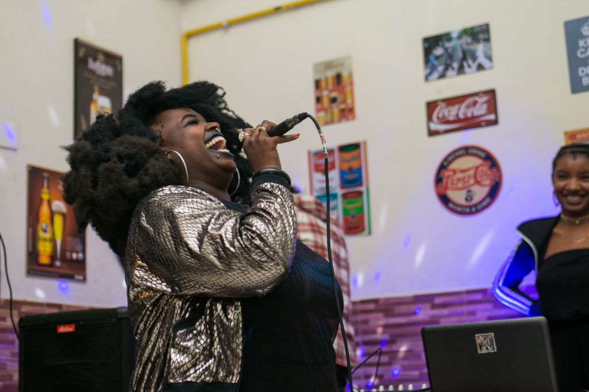
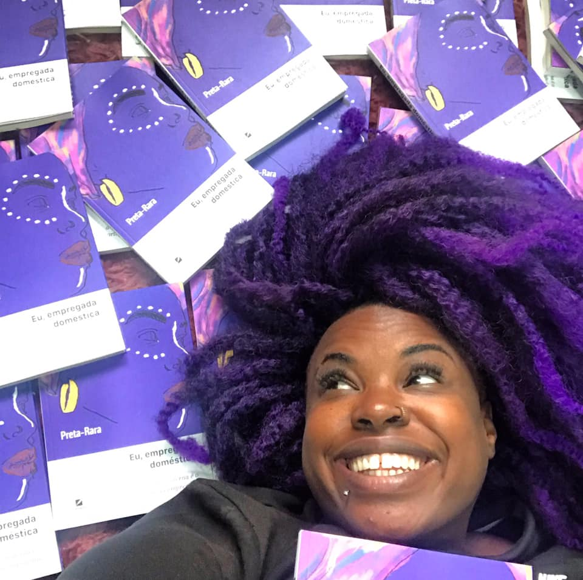

"A senzala moderna é o quartinho da empregada"
Joyce Fernandes, nascida e criada em Santos, litoral de São Paulo, é mais conhecida como Preta Rara (@pretararaoficial). Rapper, historiadora, feminista e militante do movimento negro, ela tem a trajetória muito parecida com a de tantas outras mulheres negras, de dificuldades e superação de obstáculos. Durante sete anos, trabalhou como empregada doméstica enquanto tentava dar conta da faculdade de História e do sonho de fazer música. Conseguiu, se tornou professora, hoje vive do rap. Em 2016, criou a hashtag euempregadadoméstica no Facebook e colocou para fora as dores que vinha sufocando há anos. Os depoimentos viralizaram, outras mulheres se identificavam e mandavam seus relatos e o “Eu, empregada doméstica” se tornou um projeto com projeção internacional e que luta para escoar as vozes dessas trabalhadoras.
“O trabalho doméstico no Brasil ainda é análogo à escravidão. As trabalhadoras domésticas tem cor e classe: São mulheres periféricas, pobres e pretas. É uma classe julgada como inferior.”
História
Se "resistir" é uma das principais tarefas que se impõem após a eleição do presidente de extrema direta Jair Bolsonaro (PSL), a cantora Joyce Fernandes afirma: a resistência, em sua vida, não começa agora. Veio desde o berço. Nascida e criada em Santos, município do litoral de São Paulo, ela é conhecida como Preta Rara, nome artístico que adotou.
A rapper de 33 anos é também arte-educadora, feminista e militante do movimento negro. Sua trajetória, no entanto, tem muito mais a contar. Durante sete anos, trabalhou como empregada doméstica e lutou para ecoar as vozes dessas trabalhadoras com o projeto “Eu, empregada doméstica”.
Há 12 anos, Preta Rara constrói seu espaço no cenário musical, trazendo a realidade das mulheres e do povo negro brasileiro para as letras de suas músicas. Audácia (2015), seu primeiro álbum solo, reflete isso. Faixas como Falsa Abolição e Negra Sim! cantam a temática em suas letras, com provocações sobre a situação das mulheres negras no país e a falsa ideia da democracia racial.
“A senzala moderna é o quartinho da empregada.” A analogia feita pela historiadora e rapper Preta Rara, escancara as situações degradantes as quais milhões de trabalhadoras domésticas, em sua grande maioria negras, vivem diariamente no Brasil.
Preta Rara trabalhou como empregada doméstica até 2009. Foi demitida por não aceitar comer restos de comida oferecidas pela patroa. Era proibida de se alimentar das refeições que ela mesma cozinhava.
Há mais de três anos, decidiu relatar o ocorrido em seu perfil no Facebook. Era apenas um entre os muitos episódios de violações de direitos humanos e racismo que havia sofrido de diferentes patrões em nove anos trabalhando como empregada doméstica.
Em pouco tempo, a publicação ganhou repercussão e Preta começou a receber centenas de mensagens de outras empregadas que também haviam sofrido maus tratos e violências ainda piores. Foi então que a historiadora decidiu criar a página “Eu, empregada doméstica”, para reunir depoimentos de milhares de trabalhadoras domésticas de todo o Brasil.
No mês de setembro, a rapper lançou um livro que leva o mesmo título da página. Em entrevista ao Brasil de Fato, Preta Rara afirma que os relatos apresentados na obra são inéditos e explicitam o racismo estrutural do país.
“O trabalho doméstico no Brasil ainda é análogo à escravidão. As trabalhadoras domésticas tem cor e classe: São mulheres periféricas, pobres e pretas. É uma classe julgada como inferior”, sentencia Rara.
“Alguma pessoas falam que é 'mimimi', que não existe racismo, que não existem trabalhadores nessas condições. O livro é pra mostrar que em 2019 ainda temos o mesmo discurso de 1888 [ano em que foi assinada a Lei Áurea, que estabeleceu a abolição da escravidão]. Ainda existe sim escravidão no país”, explica.
Um estudo publicado em 2018 -- feito em parceria pelo Instituto de Pesquisa Econômica Aplicada (Ipea) e a ONU Mulheres --, compilou dados históricos do trabalho doméstico entre 1995 a 2015 e constatou a predominância das mulheres negras nessa função ao longo do tempo. No último ano analisado, por exemplo, das 5,7 milhões trabalhadoras domésticas, 3,7 milhões eram negras e pardas.
Segundo o Instituto Brasileiro de Geografia e Estatística (IBGE), em 2018, o número de trabalhadoras domésticas chegou a 6,24 milhões - o maior desde 2012.
Preta Rara explica que o trabalho doméstico é hereditário para mulheres pretas. Assim como ela, sua mãe e sua avó também foram empregadas, que, inclusive, deram relatos que estão registrados no livro. Romper com esse ciclo, segundo ela, é extremamente difícil. “Esse não pode ser o único lugar para essas mulheres”, destaca.
Com orgulho, a rapper menciona ainda que a deputada federal Benedita da Silva (PT), negra e ex-doméstica, foi quem assinou a orelha de seu livro.
